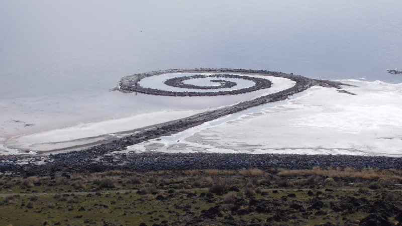

Spiral Jetty
Robert Smithson · 1970 · Basalt rock, salt crystals, earth, water · About 460 m long, 4.6 m wide · Dia Art Foundation
In copyright. Look and learn: shown for study, not for download. · Photo: Soren Harward, CC BY-SA 2.0
Smithson hired Bob Phillips, a contractor from Ogden, Utah, who hauled the rock and earth into the lake with two dump trucks, a tractor and a front-end loader in April 1970. The first coil took six days; after looking at it for two days Smithson had it reshaped, moving 7,000 tons of basalt in three more. A $9,000 grant from the Virginia Dwan Gallery paid for part of it. Smithson died in a plane crash three years later. The jetty was under water when Dia acquired it in 1999; drought in the early 2000s uncovered it.